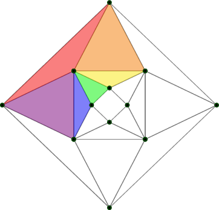
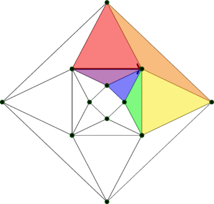
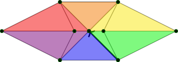
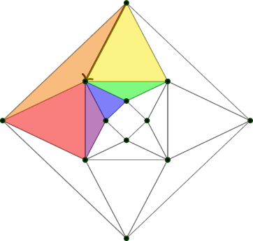
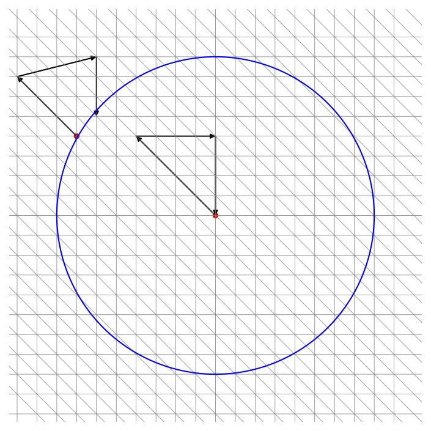
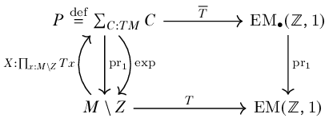

<!DOCTYPE html>
<html lang="en-us">

<head>

  <meta charset="utf-8">
  <meta name="viewport" content="width=device-width, initial-scale=1">
  <meta http-equiv="X-UA-Compatible" content="IE=edge">
  <meta name="generator" content="Source Themes Academic 4.3.1">

  

  
  
  
  
  
    
    
    
  
  

  <meta name="author" content="Greg Langmead">

  
  
  
    
  
  <meta name="description" content="In-progress masters thesis defining connections, curvature, and Chern-Weil theory in the discrete setting of homotopy type theory.">

  
  <link rel="alternate" hreflang="en-us" href="https://greg.langmead.info/writing/towards_gauge_theory_in_hott/">

  


  

  
  
  
  <meta name="theme-color" content="#2962ff">
  

  
  
  
  
    
    <link rel="stylesheet" href="https://cdnjs.cloudflare.com/ajax/libs/academicons/1.8.6/css/academicons.min.css" integrity="sha256-uFVgMKfistnJAfoCUQigIl+JfUaP47GrRKjf6CTPVmw=" crossorigin="anonymous">
    <link rel="stylesheet" href="https://use.fontawesome.com/releases/v5.6.0/css/all.css" integrity="sha384-aOkxzJ5uQz7WBObEZcHvV5JvRW3TUc2rNPA7pe3AwnsUohiw1Vj2Rgx2KSOkF5+h" crossorigin="anonymous">
    <link rel="stylesheet" href="https://cdnjs.cloudflare.com/ajax/libs/fancybox/3.2.5/jquery.fancybox.min.css" integrity="sha256-ygkqlh3CYSUri3LhQxzdcm0n1EQvH2Y+U5S2idbLtxs=" crossorigin="anonymous">

    
    
    
    
      
      
        
          <link rel="stylesheet" href="https://cdnjs.cloudflare.com/ajax/libs/highlight.js/9.15.6/styles/github.min.css" crossorigin="anonymous" title="hl-light">
          <link rel="stylesheet" href="https://cdnjs.cloudflare.com/ajax/libs/highlight.js/9.15.6/styles/dracula.min.css" crossorigin="anonymous" title="hl-dark" disabled>
        
      
    

    

    

  

  
  
  <link rel="stylesheet" href="//fonts.googleapis.com/css?family=Montserrat:400,700|Roboto:400,400italic,700|Roboto+Mono">
  

  
  
  
  <link rel="stylesheet" href="/css/academic.min.42114800f200292e1697f1e9861a67d2.css">

  

  

  <link rel="manifest" href="/site.webmanifest">
  <link rel="icon" type="image/png" href="/img/icon.png">
  <link rel="apple-touch-icon" type="image/png" href="/img/icon-192.png">

  <link rel="canonical" href="https://greg.langmead.info/writing/towards_gauge_theory_in_hott/">

  
  
  
  
    
    
  
  <meta property="twitter:card" content="summary">
  
  <meta property="og:site_name" content="Long Head">
  <meta property="og:url" content="https://greg.langmead.info/writing/towards_gauge_theory_in_hott/">
  <meta property="og:title" content="Discrete differential geometry in homotopy type theory | Long Head">
  <meta property="og:description" content="In-progress masters thesis defining connections, curvature, and Chern-Weil theory in the discrete setting of homotopy type theory."><meta property="og:image" content="https://greg.langmead.info/img/icon-192.png">
  <meta property="og:locale" content="en-us">
  
  <meta property="article:published_time" content="2023-12-20T00:00:00&#43;00:00">
  
  <meta property="article:modified_time" content="2023-12-20T00:00:00&#43;00:00">
  

  


  <link rel="me" href="https://mathstodon.xyz/@glangmead" />


  <title>Discrete differential geometry in homotopy type theory | Long Head</title>

</head>


<body id="top" data-spy="scroll" data-target="#TableOfContents" data-offset="71" >

  <aside class="search-results" id="search">
  <div class="container">
    <section class="search-header">

      <div class="row no-gutters justify-content-between mb-3">
        <div class="col-6">
          <h1>Search</h1>
        </div>
        <div class="col-6 col-search-close">
          <a class="js-search" href="#"><i class="fas fa-times-circle text-muted" aria-hidden="true"></i></a>
        </div>
      </div>

      <div id="search-box">
        
        
        
      </div>

    </section>
    <section class="section-search-results">

      <div id="search-hits">
        
      </div>

    </section>
  </div>
</aside>


  
<nav class="navbar navbar-light fixed-top navbar-expand-lg py-0" id="navbar-main">
  <div class="container">

    
      <a class="navbar-brand" href="/">Long Head</a>
      
      <button type="button" class="navbar-toggler" data-toggle="collapse"
              data-target="#navbar" aria-controls="navbar" aria-expanded="false" aria-label="Toggle navigation">
        <span><i class="fas fa-bars"></i></span>
      </button>
      

    
    <div class="collapse navbar-collapse" id="navbar">

      
      
      <ul class="navbar-nav ml-auto">
        

        

        
        
        
          
        

        
        
        
        
        
        
          
          
          
            
          
          
        

        <li class="nav-item">
          <a class="nav-link " href="/#about"><span>Home</span></a>
        </li>

        
        

        

        
        
        

        
        
        
        
        
        

        <li class="nav-item">
          <a class="nav-link " href="/cv"><span>CV</span></a>
        </li>

        
        

        

        
        
        
          
        

        
        
        
        
        
        

        <li class="nav-item">
          <a class="nav-link  active" href="/writing"><span>Research</span></a>
        </li>

        
        

        

        
        
        
          
        

        
        
        
        
        
        

        <li class="nav-item">
          <a class="nav-link " href="/publications"><span>Publications</span></a>
        </li>

        
        

        

        
        
        
          
        

        
        
        
        
        
        

        <li class="nav-item">
          <a class="nav-link " href="/posts"><span>Blog</span></a>
        </li>

        
        

      

        

        

        

        
        <li class="nav-item">
          <a class="nav-link js-dark-toggle" href="#"><i class="fas fa-moon" aria-hidden="true"></i></a>
        </li>
        

      </ul>

    </div>
  </div>
</nav>


  <article class="article" itemscope itemtype="http://schema.org/Article">

  


  

  
  
  
<div class="article-container pt-3">
  <h1 itemprop="name">Discrete differential geometry in homotopy type theory</h1>

  

  
    


<meta content="2023-12-20 00:00:00 &#43;0000 UTC" itemprop="datePublished">
<meta content="2023-12-20 00:00:00 &#43;0000 UTC" itemprop="dateModified">

<div class="article-metadata">

  
  

  
  <span class="article-date">
    
    
      
    
    <time>Dec 20, 2023</time>
  </span>
  

  

  

  
  

  
  

  
    

  

</div>

    


  
</div>


  <div class="article-container">

    <div class="article-style" itemprop="articleBody">
      <!DOCTYPE html>
<html xmlns="http://www.w3.org/1999/xhtml" lang="" xml:lang="">
<head>
  <meta charset="utf-8" />
  <meta name="generator" content="pandoc" />
  <meta name="viewport" content="width=device-width, initial-scale=1.0, user-scalable=yes" />
  <meta name="dcterms.date" content="2023-12-20" />
  <style>
    code{white-space: pre-wrap;}
    span.smallcaps{font-variant: small-caps;}
    div.columns{display: flex; gap: min(4vw, 1.5em);}
    div.column{flex: auto; overflow-x: auto;}
    div.hanging-indent{margin-left: 1.5em; text-indent: -1.5em;}
    /* The extra [class] is a hack that increases specificity enough to
       override a similar rule in reveal.js */
    ul.task-list[class]{list-style: none;}
    ul.task-list li input[type="checkbox"] {
      font-size: inherit;
      width: 0.8em;
      margin: 0 0.8em 0.2em -1.6em;
      vertical-align: middle;
    }
    /* CSS for citations */
    div.csl-bib-body { }
    div.csl-entry {
      clear: both;
      margin-bottom: 0em;
    }
    .hanging-indent div.csl-entry {
      margin-left:2em;
      text-indent:-2em;
    }
    div.csl-left-margin {
      min-width:2em;
      float:left;
    }
    div.csl-right-inline {
      margin-left:2em;
      padding-left:1em;
    }
    div.csl-indent {
      margin-left: 2em;
    }  </style>
  <link rel="stylesheet" href="https://fonts.googleapis.com/css2?family=Libre+Baskerville&family=Quattrocento:wght@400">
  <style>
  body {
    font-family: Baskerville, 'Libre Baskerville', serif;
  }
  h1, h2, h3, h4, h5, h6, .abstract-title {
    font-family: Quattrocento, sans-serif;
    font-weight: bold;
    text-align: center;
  }
  </style>
  <p><span class="math inline">\(\newcommand{\textesh}{∫}\)</span> <span
  class="math inline">\(\newcommand{\ensuremath}{}\)</span></p>
  <script src="https://cdnjs.cloudflare.com/polyfill/v3/polyfill.min.js?features=es6"></script>
  <script
  src="https://cdn.jsdelivr.net/npm/mathjax@3/es5/tex-chtml-full.js"
  type="text/javascript"></script>
</head>
<body>
<nav id="TOC" role="doc-toc">
<ul>
<li><a href="#abstract" id="toc-abstract">Abstract</a></li>
<li><a href="#overview" id="toc-overview"><span
class="toc-section-number">1</span> Overview</a></li>
<li><a href="#torsors" id="toc-torsors"><span
class="toc-section-number">2</span> Torsors</a>
<ul>
<li><a href="#univalent-replacement-for-torsors"
id="toc-univalent-replacement-for-torsors"><span
class="toc-section-number">2.1</span> Univalent replacement for
torsors</a></li>
<li><a href="#pathovers" id="toc-pathovers"><span
class="toc-section-number">2.2</span> Pathovers</a></li>
</ul></li>
<li><a href="#combinatorial-manifolds"
id="toc-combinatorial-manifolds"><span
class="toc-section-number">3</span> Combinatorial manifolds</a>
<ul>
<li><a href="#higher-simplicial-complexes"
id="toc-higher-simplicial-complexes"><span
class="toc-section-number">3.1</span> Higher simplicial
complexes</a></li>
<li><a href="#polygons" id="toc-polygons"><span
class="toc-section-number">3.2</span> Polygons</a></li>
<li><a href="#the-higher-inductive-type-oo"
id="toc-the-higher-inductive-type-oo"><span
class="toc-section-number">3.3</span> The higher inductive type <span
class="math inline">\(\ensuremath{\mathbb{O}}\)</span></a></li>
<li><a href="#the-function-link" id="toc-the-function-link"><span
class="toc-section-number">3.4</span> The function <span
class="math inline">\(\mathsf{link}\)</span></a></li>
<li><a href="#the-torus" id="toc-the-torus"><span
class="toc-section-number">3.5</span> The torus</a></li>
</ul></li>
<li><a href="#higher-geometry" id="toc-higher-geometry"><span
class="toc-section-number">4</span> Higher geometry</a>
<ul>
<li><a href="#connections" id="toc-connections"><span
class="toc-section-number">4.1</span> Connections</a>
<ul>
<li><a href="#connections-as-splittings"
id="toc-connections-as-splittings"><span
class="toc-section-number">4.1.1</span> Connections as
splittings</a></li>
<li><a href="#covering-spaces" id="toc-covering-spaces"><span
class="toc-section-number">4.1.2</span> Covering spaces</a></li>
<li><a href="#gauge-transformations"
id="toc-gauge-transformations"><span
class="toc-section-number">4.1.3</span> Gauge transformations</a></li>
</ul></li>
<li><a href="#vector-fields" id="toc-vector-fields"><span
class="toc-section-number">4.2</span> Vector fields</a></li>
</ul></li>
<li><a href="#leibniz-gauss-bonnet-poincaruxe9-hopf"
id="toc-leibniz-gauss-bonnet-poincaruxe9-hopf"><span
class="toc-section-number">5</span> Leibniz, Gauss-Bonnet,
Poincaré-Hopf</a>
<ul>
<li><a href="#the-leibniz-product-rule"
id="toc-the-leibniz-product-rule"><span
class="toc-section-number">5.1</span> The Leibniz (product)
rule</a></li>
<li><a href="#the-total-curvature" id="toc-the-total-curvature"><span
class="toc-section-number">5.2</span> The total curvature</a></li>
<li><a href="#the-total-index" id="toc-the-total-index"><span
class="toc-section-number">5.3</span> The total index</a></li>
<li><a href="#equality-of-total-index-and-total-curvature"
id="toc-equality-of-total-index-and-total-curvature"><span
class="toc-section-number">5.4</span> Equality of total index and total
curvature</a></li>
<li><a href="#identification-with-euler-characteristic"
id="toc-identification-with-euler-characteristic">Identification with
Euler characteristic</a></li>
</ul></li>
</ul>
</nav>
<h1 class="unnumbered" id="abstract">Abstract</h1>
<p>Homotopy type theory captures all the major concepts of differential
geometry including forms, connections, curvature, and gauge theory. We
show this by focusing on combinatorial manifolds, which are discrete in
the sense of real cohesion<span class="citation"
data-cites="shulman_cohesion"> (<a href="#ref-shulman_cohesion"
role="doc-biblioref">Shulman, 2017</a>)</span>, and drawing inspiration
from the similarly young field of discrete differential geometry.</p>
<blockquote>
<p>“It is always ourselves we work on, whether we realize it or not.
There is no other work to be done in the world.” — Stephen Talbott,
<em>The Future Does Not Compute</em><span class="citation"
data-cites="talbott"> (<a href="#ref-talbott"
role="doc-biblioref">Talbott, 1995</a>)</span></p>
</blockquote>
<h1 data-number="1" id="overview"><span
class="header-section-number">1</span> Overview</h1>
<p>We will define</p>
<ul>
<li><p>combinatorial 2-manifolds</p></li>
<li><p>their tangent bundles</p></li>
<li><p>vector fields,</p></li>
</ul>
<p>and then observe emerging from those definitions the presence of</p>
<ul>
<li><p>connections</p></li>
<li><p>curvature</p></li>
<li><p>the index of a vector field,</p></li>
</ul>
<p>and prove</p>
<ul>
<li><p>the Gauss-Bonnet theorem</p></li>
<li><p>the Poincaré-Hopf theorem</p></li>
<li><p>and the Leibniz formula.</p></li>
</ul>
<p>We will consider functions <span class="math inline">\(M\to
\mathrm{EM}(\ensuremath{\mathbb{Z}},1)\)</span> where <span
class="math inline">\(\mathrm{EM}(\ensuremath{\mathbb{Z}},1)\)</span> is
the connected component in the universe of the Eilenberg-MacLane space
<span
class="math inline">\(\mathrm{K}(\ensuremath{\mathbb{Z}},1)\)</span>
which we will take to be <span class="math inline">\(S^1\)</span>, and
where <span class="math inline">\(M:\mathsf{Comb2Mfd}\)</span> is a
combinatorial manifold of dimension 2, which is a simplicial complex
encoded in a higher inductive type, such that each vertex has a
neighborhood that looks like a disk with a discrete circle boundary
(i.e. a polygon). We can call terms <span
class="math inline">\(C:\mathrm{EM}(\ensuremath{\mathbb{Z}},1)\)</span>
“mere circles.”</p>
<p>Note that <span
class="math inline">\(\mathrm{EM}(\ensuremath{\mathbb{Z}},1)\)</span>
contains all the polygons. Therefore we can construct a map <span
class="math inline">\(T:M\to\mathrm{EM}(\ensuremath{\mathbb{Z}},1)\)</span>
that maps each vertex to the polygon consisting of its neighbors. This
will serve as the circle bundle of the tangent bundle of the manifold,
i.e. the principal bundle consisting of nonzero tangent vectors.</p>
<p>Now consider the type <span
class="math inline">\(\mathrm{EM_{\bullet}}(\ensuremath{\mathbb{Z}},1)\stackrel{\mathrm{def}}{=}\sum_{Y:\mathrm{EM}(\ensuremath{\mathbb{Z}},1)}Y\)</span>
of pointed mere circles. We have the pullback <span
class="math display">\[\begin{CD}
P\stackrel{\mathrm{def}}{=}\sum_{C:TM}C @&gt;\overline{T}&gt;&gt;
\mathrm{EM_{\bullet}}(\ensuremath{\mathbb{Z}},1) \\
@V{\ensuremath{\mathrm{pr}}_1}VV @V{\ensuremath{\mathrm{pr}}_1}VV \\
M @&gt;T&gt;&gt; \mathrm{EM}(\ensuremath{\mathbb{Z}},1)
\end{CD}\]</span> from the univalent fibration on the right, forming the
usual fiber of <span class="math inline">\(T\)</span> as a sigma type.
Such classifying maps are not always principal bundles; there is an
extra condition on <span class="math inline">\(T\)</span> that we will
get into later. For now it’s important only that we are mapping into a
univalent fibration so that we can make use of type theory. Univalent
fibrations are always equivalent to a projection of a type of pointed
types to some connected component of the universe.</p>
<p>We will investigate that the data in dimensions 1 and 2 of <span
class="math inline">\(T\)</span> can be thought of as a connection,
notably one that is not necessarily flat. Moreover, lifting <span
class="math inline">\(T\)</span> to <span
class="math inline">\(\mathrm{EM_{\bullet}}(\ensuremath{\mathbb{Z}},1)\)</span>
can be thought of as a vector field. There will in general not be a
total lift, just a partial function. The domain will have a boundary of
circles, and the winding number on these can be thought of as the index
of the vector field. We can then examine the total curvature and the
total index and prove that they are equal, and equal to the usual Euler
characteristic. This will simultaneously prove the Poincaré-Hopf theorem
and Gauss-Bonnet theorem in 2 dimensions, for combinatorial
manifolds.</p>
<p>Taking the dimension 1 part of a function can be thought of as its
derivative. If the codomain has an H-space structure then we can ask
about how the action on paths interacts with pointwise multiplication.
This will lead us to the Leibniz formula in this context, which emerges
simply from horizontal composition in the codomain.</p>
<h1 data-number="2" id="torsors"><span
class="header-section-number">2</span> Torsors</h1>
<p>Classical geometry tells us to look for an appropriate type of
torsors to map into. Homotopy type theory tells us to look for a
univalent fibration to map into. The type of torsors is not a connected
component of the universe, because torsors have additional structure on
top of an underlying type. So we’ll need to resolve that.</p>
<div class="mydef">
<p><strong>Definition 1</strong>. <em>Let <span
class="math inline">\(G\)</span> be a group (a set with the usual
classical structure and properties). A <em><span
class="math inline">\(G\)</span>-set</em> is a set <span
class="math inline">\(X\)</span> equipped with a homomorphism <span
class="math inline">\(\phi:G\to\mathrm{Aut}(X)\)</span>. If in addition
we have a term <span
class="math display">\[\mathsf{is\_torsor}:||X||_{-1}\times
\prod_{g:G}\mathsf{is\_equiv}(\phi(-,x):G\to X)\]</span> then we call
this data a <em><span class="math inline">\(G\)</span>-torsor</em>.
Denote the type of <span class="math inline">\(G\)</span>-torsors by
<span class="math inline">\(TG\)</span>.</em></p>
</div>
<p>If <span class="math inline">\((X,\phi),(Y,\psi):TG\)</span> then a
<span class="math inline">\(G\)</span>-equivariant map is a function
<span class="math inline">\(f:X\to Y\)</span> such that <span
class="math inline">\(f(\phi(g,x))=\psi(g,f(x))\)</span>. Denote the
type of <span class="math inline">\(G\)</span>-equivariant maps by <span
class="math inline">\(X\to_G Y\)</span>.</p>
<div class="mylemma">
<p><strong>Lemma 1</strong>. <em>There is a natural equivalence <span
class="math inline">\((X=_{TG}Y) \simeq (X\to_G Y)\)</span>.0◻</em></p>
</div>
<p>Denote by <span class="math inline">\(*\)</span> the torsor given by
<span class="math inline">\(G\)</span> actions on its underlying set by
left-translation. This serves as a basepoint for <span
class="math inline">\(TG\)</span> and we have a group isomorphism <span
class="math inline">\(\Omega TG\simeq G\)</span>.</p>
<div class="mylemma">
<p><strong>Lemma 2</strong>. <em>A <span
class="math inline">\(G\)</span>-set <span
class="math inline">\((X,\phi)\)</span> is a <span
class="math inline">\(G\)</span>-torsor if and only if there merely
exists a <span class="math inline">\(G\)</span>-equivariant equivalence
<span class="math inline">\(*\to_G X\)</span>.0◻</em></p>
</div>
<div class="mycor">
<p><strong>Corollary 1</strong>. <em>The pointed type <span
class="math inline">\((TG,*)\)</span> is a <span
class="math inline">\(\mathrm{K}(G,1)\)</span>.0◻</em></p>
</div>
<h2 data-number="2.1" id="univalent-replacement-for-torsors"><span
class="header-section-number">2.1</span> Univalent replacement for
torsors</h2>
<p>The homotopy type theory of cohomology and bundles tells us that the
type of <span class="math inline">\(G\)</span>-bundles on a type <span
class="math inline">\(M\)</span> is the type <span
class="math inline">\(M\to\mathrm{K}(G,1)\)</span>. So we will start
there as well. But this is a type of structured types, a connected
component of <span class="math inline">\(G\)</span>-sets rather than a
connected component of the universe. The paths <em>in the universe</em>
between two <span class="math inline">\(G\)</span>-sets is equivalent to
the type of equivalences between the <em>underlying types</em>, not just
the equivariant equivalences.</p>
<p>We’ll resolve this problem with the following discussion, following
Scoccola<span class="citation" data-cites="sco"> (<a href="#ref-sco"
role="doc-biblioref">Scoccola, 2020</a>)</span>. We will state the
definitions and theorems for a general <span
class="math inline">\(\mathrm{K}(G,n)\)</span> but we will be focusing
on <span class="math inline">\(n=1\)</span> in this note.</p>
<div class="mydef">
<p><strong>Definition 2</strong>. <em>Let <span
class="math inline">\(\mathrm{EM}(G,n)\stackrel{\mathrm{def}}{=}\mathrm{BAut}(\mathrm{K}(G,1))\stackrel{\mathrm{def}}{=}\sum_{Y:\mathcal{U}}||Y\simeq
\mathrm{K}(G,n)||_{-1}\)</span>. A <span
class="math inline">\(\mathrm{K}(G,n)-bundle\)</span> on a type <span
class="math inline">\(M\)</span> is the fiber of a map <span
class="math inline">\(M\to\mathrm{EM}(G,n)\)</span>.</em></p>
</div>
<p>Scoccola uses the action on the universe of suspension and of
forgetting a point to form the composition <span
class="math display">\[\mathrm{EM}(G,n)\xrightarrow[]{\Sigma}
\mathrm{EM}_{\bullet\bullet}(G,n)\xrightarrow[]{F_\bullet}\mathrm{EM_{\bullet}}(G,n)\]</span>
from types to types with two points (north and south), to pointed types
(by forgetting the south point).</p>
<div class="mydef">
<p><strong>Definition 3</strong>. <em>Given <span
class="math inline">\(f:M\to\mathrm{EM}(G,n)\)</span>, the
<em>associated action of <span class="math inline">\(M\)</span> on <span
class="math inline">\(G\)</span></em>, denoted by <span
class="math inline">\(f_\bullet\)</span> is defined to be <span
class="math inline">\(f_\bullet=F_\bullet\circ\Sigma\circ
f\)</span>.</em></p>
</div>
<div class="mythm">
<p><strong>Theorem 1</strong>. <em>(Scoccola<span class="citation"
data-cites="sco"> (<a href="#ref-sco" role="doc-biblioref">Scoccola,
2020</a>)</span> Proposition 2.39). A <span
class="math inline">\(\mathrm{K}(G,n)\)</span> bundle <span
class="math inline">\(f:M\to\mathrm{EM}(G,n)\)</span> is equivalent to a
map in <span class="math inline">\(M\to\mathrm{K}(G,n+1)\)</span>, and
so is a principal fibration, if and only if the associated action <span
class="math inline">\(f_\bullet\)</span> is contractible.</em></p>
</div>
<p>And so we can continue to work with the classifying space <span
class="math inline">\(\mathrm{EM}(G,1)\)</span> and study <span
class="math inline">\(\mathrm{K}(G,1)\)</span>-fibrations, and then
later add the extra propositional requirement when it is needed to prove
that we are working with <span
class="math inline">\(M\to\mathrm{K}(G,2)\)</span>.</p>
<h2 data-number="2.2" id="pathovers"><span
class="header-section-number">2.2</span> Pathovers</h2>
<p>Suppose we have <span
class="math inline">\(T:M\to\mathrm{EM}(\ensuremath{\mathbb{Z}},1)\)</span>.
Paths in a sigma type <span
class="math inline">\(\sum_{x:M}T(x)\)</span> are given by pairs of
paths: a path <span class="math inline">\(p:x=_M y\)</span> in the base,
and a pathover <span
class="math inline">\(p&#39;:\mathrm{tr}_p(x&#39;)=_{T(y)}y&#39;\)</span>
between <span class="math inline">\(x&#39;:T(x)\)</span> and <span
class="math inline">\(y&#39;:T(y)\)</span> in the fibers. We can’t
directly compare <span class="math inline">\(x&#39;\)</span> and <span
class="math inline">\(y&#39;\)</span> since they are of different types,
so we apply transport to one of them (which is asymmetrical, but
equivalent to the alternatives). We say <span
class="math inline">\(p&#39;\)</span> lies over <span
class="math inline">\(p\)</span>.</p>
<p>The individual fibers of <span class="math inline">\(T\)</span> are
polygons (the link of the vertex of which it is the fiber). Given a path
<span class="math inline">\(p:x=_M y\)</span> in <span
class="math inline">\(M\)</span>, one of its pathovers consists of a
path in <span class="math inline">\(T(y)\)</span>. And given a face in
<span class="math inline">\(M\)</span>, a faceover is a homotopy from a
pathover to refl.</p>
<h1 data-number="3" id="combinatorial-manifolds"><span
class="header-section-number">3</span> Combinatorial manifolds</h1>
<p>We will adapt to higher inductive types in a straightforward manner
the classical construction of <em>combinatorial manifolds</em>. See for
example the classic book by Kirby and Siebenmann<span class="citation"
data-cites="kirby_siebenmann"> (<a href="#ref-kirby_siebenmann"
role="doc-biblioref">Kirby &amp; Siebenmann, 1977</a>)</span>. These are
a subclass of simplicial complexes.</p>
<div class="mydef">
<p><strong>Definition 4</strong>. <em>An <em>abstract simplicial
complex</em> <span class="math inline">\(S\)</span> consists of a set
<span class="math inline">\(S_0\)</span> of vertices, and for each <span
class="math inline">\(k&gt;0\)</span> a set <span
class="math inline">\(S_k\)</span> of subsets of <span
class="math inline">\(S_0\)</span> of cardinality <span
class="math inline">\(k+1\)</span>, such that any <span
class="math inline">\((j+1)\)</span>-element subset of <span
class="math inline">\(S_k\)</span> is an element of <span
class="math inline">\(S_j\)</span>.</em></p>
</div>
<p>Note that we don’t require all subsets of <span
class="math inline">\(S_0\)</span> to be included – that would make
<span class="math inline">\(S\)</span> an individual simplex. A
simplicial complex is a family of simplices that are identified along
various faces.</p>
<div class="mydef">
<p><strong>Definition 5</strong>. <em>In an abstract simplicial complex
<span class="math inline">\(X\)</span>, the <em>link</em> of a vertex
<span class="math inline">\(v\)</span> is the set containing every face
<span class="math inline">\(f\in X\)</span> such that <span
class="math inline">\(v\notin f\)</span> and <span
class="math inline">\(f\cup v\)</span> is a face of <span
class="math inline">\(X\)</span>.</em></p>
</div>
<div class="mydef">
<p><strong>Definition 6</strong>. <em>A <em>combinatorial manfiold</em>
(or <em>combinatorial triangulation</em>) of dimension <span
class="math inline">\(n\)</span> is a simplicial complex of dimension
<span class="math inline">\(n\)</span> such that the link of every
vertex is a simplicial sphere of dimension <span
class="math inline">\(n-1\)</span> (i.e. its geometric realization is
homeomorphic to an <span
class="math inline">\(n-1\)</span>-sphere).</em></p>
</div>
<p>In a 2-dimensional combinatorial manifold, the link is the immediate
neighbors of <span class="math inline">\(v\)</span> and the
(1-dimensional) edges between them, forming a polygon.</p>
<p>A classical 1940 result of Whitehead, building on Cairn, states that
every smooth manifold admits a combinatorial triangulation<span
class="citation" data-cites="whitehead_triangulation"> (<a
href="#ref-whitehead_triangulation" role="doc-biblioref">Whitehead,
1940</a>)</span>. So it appears reasonably well motivated to study this
class of objects.</p>
<figure id="fig:torus_wiki_triangulation">

<figcaption>A torus with an interesting triangulation, from Wikipedia.
The links have various vertex counts from 5-7. Clearly a constant value
of 6 would also work. (By Ag2gaeh - Own work, CC BY-SA 3.0,
https://commons.wikimedia.org/w/index.php?curid=30856793)</figcaption>
</figure>
<h2 data-number="3.1" id="higher-simplicial-complexes"><span
class="header-section-number">3.1</span> Higher simplicial
complexes</h2>
<p>To convert a simplicial complex to a higher inductive type, we will
convert the data in each classical dimension to a path constructor of
the corresponding HoTT dimension. In order to specify the directionality
of all the edges and faces, we need to first choose an ordering for each
set in <span class="math inline">\(S\)</span>:</p>
<div class="mydef">
<p><strong>Definition 7</strong>. <em>The higher inductive type <span
class="math inline">\(S&#39;\)</span> corresponding to the abstract
simplicial complex <span class="math inline">\(S\)</span> is given
by</em></p>
<ol>
<li><p><em>choosing an order for the elements of each <span
class="math inline">\(S_k\)</span></em></p></li>
<li><p><em>vertices: a function <span
class="math inline">\(\mathsf{v_0}:S_0\to S&#39;\)</span> serving as the
0-dimensional constructors</em></p></li>
<li><p><em>edges: a function <span
class="math inline">\(\mathsf{v_1}:S_1\to S&#39;\)</span> sending <span
class="math inline">\(\{a, b\}\mapsto
\mathsf{v_0}(a)=\mathsf{v_0}(b)\)</span></em></p></li>
<li><p><em>at dimension <span class="math inline">\(k\)</span>, if <span
class="math inline">\(S_k=\{S_{k1},\ldots,S_{kn}\}\)</span>, a path from
<span class="math inline">\(\ensuremath{\mathsf{refl}}_{S_{k1}}\)</span>
to the concatenation <span
class="math inline">\(\mathsf{v_{k-1}}(S_{k1})\cdot\mathsf{v_{k-1}}(S_{k2})\cdot\cdots\cdot\mathsf{v_{k-1}}(S_{kn}))\)</span>.</em></p></li>
</ol>
</div>
<p>Classical constructions such as face maps, degeneracy maps, and
boundary will not be needed since homotopy type theory provides related
tools (<span class="math inline">\(\ensuremath{\mathsf{refl}}\)</span>,
groupoid operations). Now for some examples.</p>
<h2 data-number="3.2" id="polygons"><span
class="header-section-number">3.2</span> Polygons</h2>
<p>We will begin with a type that is important both for the domain and
the codomain of mere circles: a square.</p>
<div class="mydef">
<p><strong>Definition 8</strong>. <em>The higher inductive type <span
class="math inline">\(C_4\)</span> (where C stands for “circle”). <span
class="math display">\[\begin{aligned}
C_4 &amp;: \mathsf{Type}\\
c_1, c_2, c_3, c_4 &amp;: C_4 \\
c_1c_2 &amp;: c_1 = c_2 \\
c_2c_3 &amp;: c_2 = c_3 \\
c_3c_4 &amp;: c_3 = c_4 \\
c_4c_1 &amp;: c_4 = c_1 \\
\end{aligned}\]</span></em></p>
</div>
<figure>

<figcaption>The HIT <span
class="math inline">\(C_4\)</span>.</figcaption>
</figure>
<p>We may also think of <span class="math inline">\(C_4\)</span> as the
join of the two-element sets <span class="math inline">\(\{c_1, c_3\}*
\{c_2, c_4\}\)</span>. The circle itself is a non-example since it lacks
the second vertex of the edge:</p>
<div class="mydef">
<p><strong>Definition 9</strong>. <em>The higher inductive type <span
class="math inline">\(S^1\)</span>: <span
class="math display">\[\begin{aligned}
S^1&amp;:\mathsf{Type}\\
\mathsf{base}&amp;:S^1\\
\mathsf{loop}&amp;:\mathsf{base}=\mathsf{base}
\end{aligned}\]</span></em></p>
</div>
<div class="mylemma">
<p><strong>Lemma 3</strong>. <em>The function <span
class="math inline">\(\ell:C_4\to S^1\)</span> given by <span
class="math inline">\(\ell(c_i)=\mathsf{base}\)</span> for all <span
class="math inline">\(i\)</span>, and <span
class="math inline">\(\ell(c_ic_j)=\mathsf{loop}\)</span> for all <span
class="math inline">\(i,j\)</span> is an equivalence with inverse <span
class="math inline">\(\ell^{-1}(\mathsf{base})=c_1\)</span> and <span
class="math inline">\(\ell^{-1}(\mathsf{loop})=c_1c_2\cdot c_2c_3\cdot
c_3c_4\cdot c_4c_1\)</span>. There are clearly other inverses for
different choices of vertex.</em></p>
</div>
<div class="mycor">
<p><strong>Corollary 2</strong>. <em>We have <span
class="math inline">\((C_4,||\ell||_{-1}):\mathrm{EM}(\ensuremath{\mathbb{Z}},1).\)</span></em></p>
</div>
<h2 data-number="3.3" id="the-higher-inductive-type-oo"><span
class="header-section-number">3.3</span> The higher inductive type <span
class="math inline">\(\ensuremath{\mathbb{O}}\)</span></h2>
<p>We will create our first combinatorial manifold, a 2-sphere. We will
adopt the convention that a subscript indicates the dimension of a
subskeleton of a complex. For instance, we have <span
class="math inline">\(\mathsf{base}:S^1_0\)</span>.</p>
<div class="mydef">
<p><strong>Definition 10</strong>. <em>The HIT <span
class="math inline">\(\ensuremath{\mathbb{O}}_0\)</span> is just 6
points, intended as the 0-skeleton of an octahedron, with vertices named
after the colors on the faces of a puzzle cube. <span
class="math display">\[w, y, b, r, g, o :
\ensuremath{\mathbb{O}}_0\]</span></em></p>
</div>
<div class="mydef">
<p><strong>Definition 11</strong>. <em>The HIT <span
class="math inline">\(\ensuremath{\mathbb{O}}_1\)</span> is the
1-skeleton of an octahedron. <span
class="math display">\[\begin{aligned}
w, y, b, r, g, o &amp;: \ensuremath{\mathbb{O}}_1 &amp; yg &amp;: y=g \\
wb &amp;: w=b &amp; yo &amp;: y=o \\
wr &amp;: w=r &amp; br &amp;: b=r \\
wg &amp;: w=g &amp; rg &amp;: r=g \\
wo &amp;: w=o &amp; go &amp;: g=o \\
yb &amp;: y=b &amp; ob &amp;: o=b \\
yr &amp;: y=r
\end{aligned}\]</span></em></p>
</div>
<div class="mydef">
<p><strong>Definition 12</strong>. <em>The HIT <span
class="math inline">\(\ensuremath{\mathbb{O}}\)</span> is an octahedron:
<span class="math display">\[\begin{aligned}
w, y, b, r, g, o &amp;: \ensuremath{\mathbb{O}}\\
wb &amp;: w=b &amp; br &amp;: b=r &amp; wbr &amp;: wb\cdot br\cdot
wr^{-1} = \ensuremath{\mathsf{refl}}_w \\
wr &amp;: w=r &amp; rg &amp;: r=g &amp; wrg &amp;: wr\cdot rg\cdot
wg^{-1} = \ensuremath{\mathsf{refl}}_w \\
wg &amp;: w=g &amp; go &amp;: g=o &amp; wgo &amp;: wg\cdot go\cdot
wo^{-1} = \ensuremath{\mathsf{refl}}_w \\
wo &amp;: w=o &amp; ob &amp;: o=b &amp; wob &amp;: wo\cdot ob\cdot
wb^{-1} = \ensuremath{\mathsf{refl}}_w \\
yb &amp;: y=b &amp; &amp; &amp; yrb &amp;: yr\cdot rb\cdot yb^{-1} =
\ensuremath{\mathsf{refl}}_y \\
yr &amp;: y=r &amp; &amp; &amp; ygr &amp;: yg\cdot gr\cdot yr^{-1} =
\ensuremath{\mathsf{refl}}_y \\
yg &amp;: y=g &amp; &amp; &amp; yog &amp;: yo\cdot og\cdot yg^{-1} =
\ensuremath{\mathsf{refl}}_y \\
yo &amp;: y=o &amp; &amp; &amp; ybo &amp;: yb\cdot bo\cdot yo^{-1} =
\ensuremath{\mathsf{refl}}_y
\end{aligned}\]</span></em></p>
</div>
<figure>

<figcaption>The HIT <span
class="math inline">\(\ensuremath{\mathbb{O}}\)</span> which has 6
points, 12 1-paths, 8 2-paths.</figcaption>
</figure>
<p>We have obvious maps <span
class="math inline">\(\ensuremath{\mathbb{O}}_0\xrightarrow[]{i_0}
\ensuremath{\mathbb{O}}_1\xrightarrow[]{i_1}
\ensuremath{\mathbb{O}}\)</span> that include each skeleton into the
next-higher-dimensional skeleton.</p>
<h2 data-number="3.4" id="the-function-link"><span
class="header-section-number">3.4</span> The function <span
class="math inline">\(\mathsf{link}\)</span></h2>
<p>Taking the link of a vertex gives us a map to the universe.</p>
<div class="mydef">
<p><strong>Definition 13</strong>. <em><span
class="math inline">\(\mathsf{link}:\ensuremath{\mathbb{O}}_0\to\mathrm{BAut}C_4\)</span>
is given by induction: <span class="math display">\[\begin{aligned}
\mathsf{link}(w) &amp;= brgo &amp; \mathsf{link}(r) &amp;= wbyg \\
\mathsf{link}(y) &amp;= bogr &amp; \mathsf{link}(g) &amp;= wryo \\
\mathsf{link}(b) &amp;= woyr &amp; \mathsf{link}(o) &amp;= wgyb
\end{aligned}\]</span> We chose these orderings for the vertices in the
link, by visualizing standing at the given vertex as if it were the
north pole, then looking south and enumerating the link in clockwise
order, starting from <span class="math inline">\(w\)</span> if possible,
else <span class="math inline">\(b\)</span>.</em></p>
</div>
<figure id="fig:triangle_of_equators">


<figcaption><span class="math inline">\(\mathsf{link}\)</span> for the
verticies <span class="math inline">\(w, b\)</span> and <span
class="math inline">\(r\)</span>.</figcaption>
</figure>
<p>To extend <span class="math inline">\(\mathsf{link}\)</span> to the
1-skeleton, imagine how <span
class="math inline">\(\mathsf{link}\)</span> changes as we slide from
point to point. Sliding from <span class="math inline">\(w\)</span> to
<span class="math inline">\(b\)</span> and tipping the link as we go, we
see <span class="math inline">\(r\mapsto r\)</span> and <span
class="math inline">\(o\mapsto o\)</span> because those lie on the axis
of rotation. Then <span class="math inline">\(g\mapsto w\)</span> and
<span class="math inline">\(b\mapsto y\)</span>.</p>
<p>The full map on the 1-skeleton is:</p>
<div class="mydef">
<p><strong>Definition 14</strong>. <em>Define <span
class="math inline">\(T_1:\ensuremath{\mathbb{O}}_1\to\mathrm{BAut}C_4\)</span>
on just the 1-skeleton by extending <span
class="math inline">\(\mathsf{link}\)</span> as follows: Transport away
from <span class="math inline">\(w\)</span>:</em></p>
<ul>
<li><p><em><span class="math inline">\(T_1(wb):[b, r, g, o]\mapsto [y,
r, w, o]\)</span> (<span class="math inline">\(r, o\)</span>
fixed)</em></p></li>
<li><p><em><span class="math inline">\(T_1(wr):[b, r, g, o]\mapsto [b,
y, g, w]\)</span> (<span class="math inline">\(b, g\)</span>
fixed)</em></p></li>
<li><p><em><span class="math inline">\(T_1(wg):[b, r, g, o]\mapsto [w,
r, y, o]\)</span></em></p></li>
<li><p><em><span class="math inline">\(T_1(wo):[b, r, g, o]\mapsto [b,
w, g, y]\)</span></em></p></li>
</ul>
<p><em>Transport away from <span
class="math inline">\(y\)</span>:</em></p>
<ul>
<li><p><em><span class="math inline">\(T_1(yb):[b, o, g, r]\mapsto [w,
o, y, r]\)</span></em></p></li>
<li><p><em><span class="math inline">\(T_1(yr):[b, o, g, r]\mapsto [b,
y, g, w]\)</span></em></p></li>
<li><p><em><span class="math inline">\(T_1(yg):[b, o, g, r]\mapsto [y,
o, w, r]\)</span></em></p></li>
<li><p><em><span class="math inline">\(T_1(yo):[b, o, g, r]\mapsto [b,
w, g, y]\)</span></em></p></li>
</ul>
<p><em>Transport along the equator:</em></p>
<ul>
<li><p><em><span class="math inline">\(T_1(br):[w, o, y, r]\mapsto [w,
b, y, g]\)</span></em></p></li>
<li><p><em><span class="math inline">\(T_1(rg):[w, b, y, g]\mapsto [w,
r, y, o]\)</span></em></p></li>
<li><p><em><span class="math inline">\(T_1(go):[w, r, y, o]\mapsto [w,
g, y, b]\)</span></em></p></li>
<li><p><em><span class="math inline">\(T_1(ob):[w, g, y, b]\mapsto [w,
o, y, r]\)</span></em></p></li>
</ul>
</div>
<p>It’s very important to be able to visualize what <span
class="math inline">\(T_1\)</span> does to triangular paths such as
<span class="math inline">\(wb\cdot br\cdot rw\)</span> (which
circulates around the boundary of face <span
class="math inline">\(wbr\)</span>). You can see it if you imagine
Figure <a href="#fig:triangle_of_equators" data-reference-type="ref"
data-reference="fig:triangle_of_equators">2</a> as the frames of a short
movie. Or you can place your palm over the top of a cube and note where
your fingers are pointing, then slide your hand to an equatorial face,
then along the equator, then back to the top. The answer is: you come
back rotated clockwise by a quarter-turn.</p>
<div class="mydef">
<p><strong>Definition 15</strong>. <em>The map <span
class="math inline">\(R:C_4\to C_4\)</span> rotates by one quarter turn,
one “click":</em></p>
<div class="multicols">
<p><em><span>2</span></em></p>
<ul>
<li><p><em><span class="math inline">\(R(c_1) =
c_2\)</span></em></p></li>
<li><p><em><span class="math inline">\(R(c_2) =
c_3\)</span></em></p></li>
<li><p><em><span class="math inline">\(R(c_3) =
c_4\)</span></em></p></li>
<li><p><em><span class="math inline">\(R(c_4) =
c_1\)</span></em></p></li>
<li><p><em><span class="math inline">\(R(c_1c_2) =
c_2c_3\)</span></em></p></li>
<li><p><em><span class="math inline">\(R(c_2c_3) =
c_3c_4\)</span></em></p></li>
<li><p><em><span class="math inline">\(R(c_3c_4) =
c_4c_1\)</span></em></p></li>
<li><p><em><span class="math inline">\(R(c_4c_1) =
c_1c_2\)</span></em></p></li>
</ul>
</div>
</div>
<p>Now let’s extend <span class="math inline">\(T_1\)</span> to all of
<span class="math inline">\(\ensuremath{\mathbb{O}}\)</span> by
providing values for the eight faces. The face <span
class="math inline">\(wbr\)</span> is a path from <span
class="math inline">\(\ensuremath{\mathsf{refl}}_w\)</span> to the
concatenation <span class="math inline">\(wb\cdot br\cdot rw\)</span>,
and so the image of <span class="math inline">\(wbr\)</span> under the
extended version of <span class="math inline">\(T_1\)</span> must be a
homotopy from <span
class="math inline">\(\ensuremath{\mathsf{refl}}_{T_1(w)}\)</span> to
<span class="math inline">\(T_1(wb\cdot br\cdot rw)\)</span>.</p>
<div class="mydef">
<p><strong>Definition 16</strong>. <em>Define <span
class="math inline">\(T_2:\ensuremath{\mathbb{O}}\to\mathrm{BAut}C_4\)</span>
by extending <span class="math inline">\(T_1\)</span> to the faces as
follows:</em></p>
<div class="multicols">
<p><em><span>2</span></em></p>
<ul>
<li><p><em><span
class="math inline">\(T_2(wbr)=H_R\)</span></em></p></li>
<li><p><em><span
class="math inline">\(T_2(wrg)=H_R\)</span></em></p></li>
<li><p><em><span
class="math inline">\(T_2(wgo)=H_R\)</span></em></p></li>
<li><p><em><span
class="math inline">\(T_2(ybo)=H_R\)</span></em></p></li>
<li><p><em><span
class="math inline">\(T_2(yrb)=H_R\)</span></em></p></li>
<li><p><em><span
class="math inline">\(T_2(ygr)=H_R\)</span></em></p></li>
<li><p><em><span
class="math inline">\(T_2(yog)=H_R\)</span></em></p></li>
<li><p><em><span
class="math inline">\(T_2(ybo)=H_R\)</span></em></p></li>
</ul>
</div>
<p><em>where <span
class="math inline">\(H_R:R=\ensuremath{\mathsf{refl}}\)</span> is the
obvious homotopy.</em></p>
</div>
<p>All the faces do the same thing: they map to a homotopy between the
identity and clockwise rotation by a quarter turn. Concatenating the
eight faces in the 2-groupoid <span
class="math inline">\(\ensuremath{\mathbb{O}}\)</span> would then map to
a homotopy between the identity and two full rotations. This makes
visible in HoTT the link between curvature and the Euler characteristic
(which is 2 for the octahedron).</p>
<h2 data-number="3.5" id="the-torus"><span
class="header-section-number">3.5</span> The torus</h2>
<p>We can define a combinatorial torus as a similar HIT. This time each
vertex will have six neighbors. So all the links will be merely equal to
<span class="math inline">\(C_6\)</span> which is a hexagonal version of
<span class="math inline">\(C_4\)</span>. See Figure <a
href="#fig:torus" data-reference-type="ref"
data-reference="fig:torus">3</a>.</p>
<p>To help parse this figure, imagine instead Figure <a
href="#fig:flattorus" data-reference-type="ref"
data-reference="fig:flattorus">4</a>. We take this simple
alternating-triangle pattern, then glue the left and right edges, then
bend into Figure <a href="#fig:torus" data-reference-type="ref"
data-reference="fig:torus">3</a>. The fact that each column in Figure <a
href="#fig:flattorus" data-reference-type="ref"
data-reference="fig:flattorus">4</a> has four dots corresponds to the
torus in Figure <a href="#fig:torus" data-reference-type="ref"
data-reference="fig:torus">3</a> having a square in front, diamonds in
the middle, and a square in back.</p>
<figure id="fig:torus">

<figcaption>Torus embedded in 3-dimensional space. Black lines trace
four square-shaped paths, red ones connect the front square to the
middle diamonds, and blue ones connect the back path to the middle
ones.</figcaption>
</figure>
<figure id="fig:flattorus">

<figcaption>An inspiration for the torus. Identify the sides and then
the top, definitionally, to get the actual torus.</figcaption>
</figure>
<p>It’s a bit of a challenge to visualize how the connection should
twist these links as we move around. Part of the issue is that we have
actually constrained ourselves quite a bit by requiring the tangent
space to be the link of a point, which only has six points. We could be
more precise about angles if the tangent spaces had many subdivisions of
the circle. The way to achieve better approximations, which we will not
pursue in this paper, is to <em>refine</em> a given triangulation, and
then choose a contractible neighborhood for each point which is not the
link but goes “farther out” and consists of many edges and encloses many
triangles. We could then transport along a single edge, and map between
two circles that each have many segments, approximating to arbitrary
precision any real-world application. The theory and practice of
refinements is extensive and includes computer graphics research.</p>
<figure id="fig:torus_twist">




<figcaption>This shows the transport map along the top triangle, in the
counterclockwise direction. The first transport is twistier than along
other edges: it pivots the hexagon around the top of the outer diamond.
The net effect of the three stages is to rotate the original hexagon by
one notch counterclockwise.</figcaption>
</figure>
<p>Transport along geodesics is minimal in a technical sense, meaning
the least twisty. If we use the flat torus diagram to help us, then we
can identify the outer and inner diamond, which are three of the
vertical black lines, as geodesics, as well as all of the diagonal
lines, which are the ones in Figure <a href="#fig:torus_geodesic"
data-reference-type="ref"
data-reference="fig:torus_geodesic">[fig:torus_geodesic]</a>. That
leaves only the black vertical lines that go around the front and back
squares. Those are not geodesics, and some twisting will take place
there.</p>
<p>I am talking about twisting on individual edges, but that’s not a
concept with standalone meaning since the hexagons are torsors. I’m
impicitly using the flat torus to makes the hexagons all pointed, by
pointing them at the top as they appear in Figure <a
href="#fig:flattorus" data-reference-type="ref"
data-reference="fig:flattorus">4</a>. But let’s not use that extra
information, and instead let’s start talking about loops around
faces.</p>
<figure id="fig:dense_circle">

<figcaption>To better approximate small transport angles, we would
refine the mesh and instead of the link we would use circle-like paths
that include more triangles, and have many edges. Imagine transporting
the blue circle around the triangle indicated in the center. The point
on the circle might move through the path shown, indicating how the
circle comes back rotated just a few degrees counterclockwise. Use your
imagination to discretize the smooth circle onto the points of the
mesh.</figcaption>
</figure>
<h1 data-number="4" id="higher-geometry"><span
class="header-section-number">4</span> Higher geometry</h1>
<p>Here are the translations that are covered in the current paper:
<span class="math display">\[\begin{aligned}
&amp; \text{\small Connections are infinitesimal splittings of a} &amp;
\quad &amp;\text{\small Paths in a sigma type are equivalent to
a}        \\
&amp; \text{\small principal bundle.} &amp; \quad&amp;\text{\small pair
of paths.}        \\ \hline
&amp; \text{\small Differentials satisfy the Leibniz (product) rule.}
&amp;\quad  &amp;\text{\small Horizontal composition in an H-space is}
\\
&amp;  &amp;  \quad&amp;\text{\small performed in two steps.} \\ \hline
&amp; \text{\small Connections with 0-truncated groups are
covering}        &amp;\quad &amp;\text{\small Transport around
contractible loops is } \ensuremath{\mathsf{refl}}\\
&amp; \text{\small spaces with unique flat connection.}        &amp;
\quad&amp;\text{\small when fibers are sets.}             \\ \hline
&amp; \text{\small The group of gauge transformations (bundle}
&amp;\quad &amp;\text{\small Homotopies of classifying maps respect } \\
&amp; \text{\small automorphisms) acts on the space of connections.}
&amp; \quad&amp;\text{\small the splitting of paths in sigma types.} \\
\end{aligned}\]</span></p>
<h2 data-number="4.1" id="connections"><span
class="header-section-number">4.1</span> Connections</h2>
<p>To hew close to the intended context of the term “connection” we will
examine manifold-like types mapping into bundle-classifying-like types.
The novelty here, compared to other HoTT investigations, is the focus on
combinatorial types to stand in for manifolds.</p>
<p>In recent times it has been believed in the HoTT community that maps
from a discrete type to a discrete classifying space can encode only the
connections that a classical mathematician would call <em>flat</em>
(zero curvature). In this context the word <em>discrete</em> means
having the discrete topology, in the sense of cohesion<span
class="citation" data-cites="shulman_cohesion"> (<a
href="#ref-shulman_cohesion" role="doc-biblioref">Shulman,
2017</a>)</span>. This is not the case! We will show that if the
codomain is a classifying space of <span
class="math inline">\(S^1\)</span> or other group of homotopy dimension
at least 1, then non-flat connections appear despite the type <span
class="math inline">\(S^1\)</span> being topologically discrete. Another
common meaning of the shorthand “discrete” is to indicate a 0-truncated
type, i.e. a set, as opposed to a type with higher homotopical
structures. We will show that indeed if the codomain classifies sets,
which is the case for example with the classifying space <span
class="math inline">\(B\ensuremath{\mathbb{Z}}\)</span>, the delooping
of <span class="math inline">\(\ensuremath{\mathbb{Z}}\)</span>, then
connections are flat. (The type we denote by <span
class="math inline">\(\mathbb{S}^1\stackrel{\mathrm{def}}{=}\{(x,
y)|x^2+y^2=1\}\)</span> is a set and is not topologically discrete. We
will not be discussing it at all in this paper.)</p>
<p>The DDG philosophy tells us to look at HITs that are polytope-like. A
polytope <span class="math inline">\(M\)</span> will have finitely many
0-dimesional (point) constructors <span
class="math inline">\(\{m_0^i\}\)</span>, finitely many 1-dimesnional
constructors <span
class="math inline">\(\{m_1^{ij}:m_0^i=m_0^j\}\)</span>, and so on. Type
families <span class="math inline">\(f:M\to \mathcal{U}\)</span> on this
type specify where each of these constructors is sent. In DDG parlance,
<span class="math inline">\(f\)</span> restricted to the 0-dimensional
constructors of <span class="math inline">\(M\)</span> is a 0-form and
<span class="math inline">\(f\)</span> restricted to the 1-dimensional
constructors (not the 1-skeleton but just the 1-dimensional parts,
whatever that means in HoTT) is a 1-form, and so on.</p>
<p>A principal <span class="math inline">\(S^1\)</span> bundle is a
family of <span class="math inline">\(S^1\)</span> torsors and so we
will often be focusing on the function type <span
class="math inline">\(M\to \mathrm{BAut}_1(S^1)\)</span>. The novel
claim here is that <span class="math inline">\(M\to
\mathrm{BAut}_1(S^1)\)</span> contains more than just all the principal
<span class="math inline">\(S^1\)</span>-bundles: it also contains all
the connections on all the bundles. Every connection is present, both
curved and flat, because we have complete freedom to specify the images
of the paths.</p>
<p>Classically, curvature is a property of the connection. It is
computed either on infinitesimal loops, or on the infinitesimal surface
bounded by the loop. In fact it is “the derivative of the connection”
morally speaking. We will look for curvature by examining <span
class="math inline">\(f\)</span> on 1-dimensional loops. If <span
class="math inline">\(M\)</span> is at least a 2-type and if we want to
claim that <span class="math inline">\(f\)</span> classifies a bundle
with connection, then we will be required to map the 2-faces of <span
class="math inline">\(M\)</span> (the 2-dimesional constructors) to a
path from <span
class="math inline">\(\ensuremath{\mathsf{refl}}\)</span> to the image
of a bounding loop. So at dimension 2 we will impose that constraint.
Since <span class="math inline">\(\mathrm{BAut}_1(S^1)\)</span> is
2-truncated, <span class="math inline">\(f\)</span> factors through the
truncation map <span class="math inline">\(M\to||M||_2\)</span> and so
that’s the top dimension.</p>
<p>There is an example at the end of this paper. For those who are best
served by examples, do look at it and return to this point.</p>
<h3 data-number="4.1.1" id="connections-as-splittings"><span
class="header-section-number">4.1.1</span> Connections as
splittings</h3>
<p>The classical story goes like this.</p>
<div class="mydef">
<p><strong>Definition 17</strong>. <em>The <em>vertical bundle</em>
<span class="math inline">\(VP\)</span> of a principal bundle <span
class="math inline">\(\pi:P\to M\)</span> with Lie group <span
class="math inline">\(G\)</span> is the kernel of the derivative <span
class="math inline">\(T\pi:TP\to TM\)</span>.</em></p>
</div>
<p><span class="math inline">\(VP\)</span> can be visualized as the
collection of tangent vectors that point along the fibers. It should be
clear that the group <span class="math inline">\(\mathrm{Aut}P\)</span>
acts on <span class="math inline">\(VP\)</span>: an automorphism <span
class="math inline">\(\phi:P\to P\)</span> sends <span
class="math inline">\(V_pP\)</span> to <span
class="math inline">\(V_{\phi(p)}P\)</span>, where of course <span
class="math inline">\(\pi(p)=\pi(\phi(p))\)</span>.</p>
<div class="mydef">
<p><strong>Definition 18</strong>. <em>An <em>Ehresmann connection</em>
on a principal bundle <span class="math inline">\(\pi:P\to M\)</span>
with Lie group <span class="math inline">\(G\)</span> is a splitting
<span class="math inline">\(TP=VP\oplus HP\)</span> at every point of
<span class="math inline">\(P\)</span> into vertical and “horizontal”
subspaces, which is preserved by the action of <span
class="math inline">\(\mathrm{Aut}P\)</span>.</em></p>
</div>
<p>Being preserved by the action of <span
class="math inline">\(\mathrm{Aut}P\)</span> means that the
complementary horizontal subspaces in a given fiber of <span
class="math inline">\(\pi:P\to M\)</span> are determined by the
splitting at any single point in the fiber. The action of <span
class="math inline">\(G\)</span> on this fiber can then push the
splitting around to all the other points.</p>
<p>The motivation for this definition is that we now have an isomorphism
<span class="math inline">\(T_p\pi:H_pP\to T_{\pi(p)}M\)</span> between
each horizontal space and the tangent space below it in <span
class="math inline">\(M\)</span>. This means that given a tangent vector
at <span class="math inline">\(x:M\)</span> and a point <span
class="math inline">\(p\)</span> in <span
class="math inline">\(\pi^{-1}(x)\)</span> we can uniquely lift the
tangent vector to a horizontal vector at <span
class="math inline">\(p\)</span>. We can also lift vector fields and
paths in this way. To lift a path <span
class="math inline">\(\gamma:[0,1]\to M\)</span> you must specify a lift
for <span class="math inline">\(\gamma(0)\)</span> and then lift the
tangent vectors of <span class="math inline">\(\gamma\)</span> and prove
that you can integrate the lift of that vector field upstairs in <span
class="math inline">\(HP\)</span>.</p>
<p>Then, armed with the lifting of paths one immediately obtains
isomorphisms between the fibers of <span
class="math inline">\(P\)</span>. So the Ehresmann connection, the
lifting of paths, and transport isomorphisms between fibers are all
recapitulations of the structure that the connection adds to the
bundle.</p>
<p>Moving now to HoTT, fix a type <span
class="math inline">\(M:\mathcal{U}\)</span> and a type family <span
class="math inline">\(f:M\to\mathcal{U}\)</span>. Path induction gives
us the transport isomorphism <span class="math inline">\(\prod_{p:x=_M
y}\mathrm{tr}(p):f(x)=f(y)\)</span>. We can use this to define a type of
<em>dependent paths</em>, also called <em>pathovers</em> or <em>paths
over</em> a given path.</p>
<div class="mydef">
<p><strong>Definition 19</strong>. <em>With the above context and points
<span class="math inline">\(a:f(x), b:f(y)\)</span> the type of
<em>dependent paths over <span class="math inline">\(p\)</span></em>
with endpoints <span class="math inline">\(a, b\)</span> is denoted
<span class="math display">\[a\xrightarrow[{p}]{=}b.\]</span> By
induction we can assume <span class="math inline">\(p\)</span> is <span
class="math inline">\(\ensuremath{\mathsf{refl}}_a\)</span> in which
case <span class="math inline">\(a\xrightarrow[{p}]{=}b\)</span> is
<span class="math inline">\(a=_{f(x)}a\)</span>.</em></p>
</div>
<p>See <span class="citation" data-cites="Symmetry"> (<a
href="#ref-Symmetry" role="doc-biblioref">Bezem <em>et al.</em>,
2023</a>)</span> for more discussion of dependent paths (where they use
the term “path over”), including composition, and associativity
thereof.</p>
<p>We recall now the identity type of sigma types:</p>
<div id="thm:idsit" class="mythm">
<p><strong>Theorem 2</strong>. <em>(HoTT book Theorem 2.7.2 <span
class="citation" data-cites="hottbook"> (<a href="#ref-hottbook"
role="doc-biblioref">Univalent Foundations Program, 2013</a>)</span>) If
<span class="math inline">\(f:M\to \mathcal{U}\)</span> is a type family
and <span class="math inline">\(w,w&#39;:\sum_{x:M}f(x)\)</span> then
there is an equivalence <span
class="math display">\[\mathsf{split}:(w=w&#39;)\simeq
\sum_{p:\ensuremath{\mathrm{pr}}_1(w)=_M\ensuremath{\mathrm{pr}}_1(w&#39;)}
\left[\mathrm{tr}(p)(\ensuremath{\mathrm{pr}}_2(w))\right] =
\ensuremath{\mathrm{pr}}_2(w&#39;).\]</span></em></p>
</div>
<p>In particular, given <span class="math inline">\(p:x=_M y\)</span>
and <span class="math inline">\(w:f(x)\)</span> we have <span
class="math inline">\(w\xrightarrow[{p}]{=}tr(p)(w)\simeq
tr(p)(w)=_{f(y)}tr(p)(w)\)</span> which has the term <span
class="math inline">\(\ensuremath{\mathsf{refl}}\)</span> which we can
call “the horizontal lift of <span class="math inline">\(p\)</span>
starting at <span class="math inline">\(w\)</span>.” We can imitate the
classical definition of a connection by defining <span
class="math inline">\(\omega\stackrel{\mathrm{def}}{=}\ensuremath{\mathrm{pr}}_2\circ\mathsf{split}\)</span>,
the projection onto the vertical component. And thus in HoTT we can see
the equivalence of transport and lifting of paths into horizontal and
vertical components.</p>
<h3 data-number="4.1.2" id="covering-spaces"><span
class="header-section-number">4.1.2</span> Covering spaces</h3>
<p>If <span class="math inline">\(G\)</span> is a 0-truncated group such
as <span class="math inline">\(\ensuremath{\mathbb{Z}}\)</span> then the
type of torsors (delooping) <span class="math inline">\(BG\)</span> is
1-truncated. If <span class="math inline">\(f:M\to BG\)</span> is a type
family then <span class="math inline">\(\sum_{x:M}f(x)\)</span> has
fibers that are sets (<span class="math inline">\(G\)</span>-torsors).
So transport functions are set isomorphisms, and the transport of any
contractible loop in <span class="math inline">\(M\)</span> will be
<span class="math inline">\(\ensuremath{\mathsf{refl}}\)</span> (the
identity) of the fiber, which is what we mean by flat.</p>
<h3 data-number="4.1.3" id="gauge-transformations"><span
class="header-section-number">4.1.3</span> Gauge transformations</h3>
<p>A <em>gauge transformation</em> is a term inherited from physics.
It’s an automorphism of a principal bundle <span
class="math inline">\(P\to M\)</span>, meaning a homeomorphism of <span
class="math inline">\(P\)</span> that commutes with the projection to
<span class="math inline">\(M\)</span> and so acts on each fiber. It is
further required to be equivariant under the action of the group <span
class="math inline">\(G\)</span>, and so it’s very similar to the act of
multiplying each fiber by a continuously varying element of <span
class="math inline">\(G\)</span>.</p>
<p>In HoTT if the bundle is classified by <span
class="math inline">\(f:M\to \mathcal{U}\)</span> then an automorphism
is a homotopy <span class="math inline">\(f\sim f\)</span> and the group
of gauge transformations is the loop space <span
class="math inline">\(\Omega_f(M\to \mathcal{U})\)</span>.</p>
<p>Recall that torsors have a physical interpretation as a quantity
without a specified unit, such as mass, length, or time. When we choose
a base point in a torsor it becomes the standard torsor <span
class="math inline">\(G\)</span> acting on itself (for example, the
additive real numbers). A physicist is looking for properties or laws
that are independent of such a choice. In the 20th century physicists
further wondered about choices of units that vary from point to point,
and began searching for laws that are invariant under this much larger
space of transformations. And so they and we are led to explore
quotienting by the action of the group of gauge transformations, and in
particular the space of connections “mod gauge.” In this scenario the
base manifold <span class="math inline">\(M\)</span> is spacetime, and a
gauge transformation is a smoothly varying choice of gauge (units) at
each point.</p>
<p>Gauge transformations act on connections. When we view connections as
infinitesimal splittings of <span class="math inline">\(TP\)</span> into
vertical and horizontal sub-bundles, a gauge transformation that is
constant in the neighborhood of a point will not change the splitting,
it will just shift the fiber rigidly along itself, but one that is
changing rapidly near a point will tilt the horizontal subspaces. So
there are two effects: the effect of sliding along the fiber, and the
effect of the rate of change of the gauge transformation. In classical
geometry you’ll see formulas like this:</p>
<div class="mythm">
<p><strong>Theorem 3</strong>. <em>Let <span class="math inline">\(P\to
M\)</span> be a principal bundle and <span
class="math inline">\(A\in\Omega^1(M,\mathfrak{g})\)</span> a connection
1-form on <span class="math inline">\(P\)</span>. Suppose that <span
class="math inline">\(H\in \mathscr{G}(P)\)</span> is a bundle
automorphism. Then <span class="math inline">\(H^*A\)</span> is a
connection 1-form and in a neighborhood <span
class="math inline">\(U\)</span> of a point <span
class="math inline">\(x\in M\)</span> we can write <span
class="math inline">\(H\)</span> as a function <span
class="math inline">\(H_U:U\to G\)</span> where <span
class="math inline">\(H_U(x)\in G\)</span> is a group element
multiplying the fiber at <span class="math inline">\(x\)</span>, and
then we have <span
class="math display">\[H^*A=\mathrm{Ad}_{H_U(x)^{-1}}\circ A +
H_U^*(\mu_G)\]</span> where <span
class="math inline">\(\mu_G:\Omega^1(G,\mathfrak{g})\)</span> is the
Maurer-Cartan form on <span class="math inline">\(G\)</span>.</em></p>
</div>
<p>This theorem is a combination of Theorems 5.2.2 and 5.4.4 in the
excellent recent book on gauge theory for mathematicians interested in
physics by Mark Hamilton<span class="citation"
data-cites="hamilton2017"> (<a href="#ref-hamilton2017"
role="doc-biblioref">Hamilton, 2017</a>)</span>.</p>
<p>It’s not so important to fully understand this formula because we
will re-explain it in HoTT terms in a moment. But notice that <span
class="math inline">\(H^*A\)</span> (the action of the gauge
transformation on the connection 1-form) has contributions from two
terms (both of which are vertical — connections always map onto the
vertical bundle). The first is the adjoint action at the specific point
<span class="math inline">\(x\)</span>. This is always what we expect
when we shift the base point in a torsor and look at the resulting group
(or in this case, the Lie algebra). The second term involves the
Maurer-Cartan form, which is the derivative of subtraction in the group.
It takes tangent vectors at <span class="math inline">\(g:G\)</span> to
a tangent vector at the identity (the Lie algebra, denoted <span
class="math inline">\(\mathfrak{g}\)</span>) by differentiating the
action of multiplication by <span class="math inline">\(g^{-1}\)</span>.
If we think in terms of finite-length paths, then imagine a path <span
class="math inline">\(p:g=g&#39;\)</span> and the function <span
class="math inline">\((g^{-1}\cdot -)\)</span>. The function will act on
the path to give a path <span class="math inline">\(g^{-1}\cdot
p:e=(g&#39;\cdot g^{-1})\)</span> that starts at the identity. So the
Maurer-Cartan form shifts paths to start at the identity by subtracting
off the start point. Our Maurer-Cartan term is the pullback of the
Maurer-Cartan form by <span class="math inline">\(H\)</span> which
records how <span class="math inline">\(H\)</span> acts infinitesimally,
i.e. the contribution from the gauge transformation <span
class="math inline">\(H\)</span> that comes from the rapidity of change
from point to point. This term will be large when <span
class="math inline">\(H_U\)</span> has a large derivative.</p>
<p>In HoTT the connection’s parallel transport is visible as the
transport function, and the horizontal-vertical splitting is visible in
the decomposition of paths in the sigma type (total space) into pairs of
paths. What is the effect of applying a homotopy <span
class="math inline">\(H:f\sim f\)</span> on transport, and on
splitting?</p>
<p><span class="math inline">\(H\)</span> is a family of fiber
automorphisms: <span
class="math inline">\(H:\prod_{a:M}f(a)=f(a)\)</span> which we can
assemble into an equivalence <span
class="math inline">\(H&#39;:\sum_{a:M}f(a)=\sum_{a:M}f(a)\)</span> that
acts fiberwise. We want to compute the action of <span
class="math inline">\(\ensuremath{\mathsf{ap}}(H&#39;)\)</span> on the
horizontal-vertical decomposition of paths from Theorem <a
href="#thm:idsit" data-reference-type="ref"
data-reference="thm:idsit">2</a> by computing <span
class="math inline">\(\omega\circ\ensuremath{\mathsf{ap}}(H&#39;)=\ensuremath{\mathrm{pr}}_2\circ\mathsf{split}\circ\ensuremath{\mathsf{ap}}(H&#39;)\)</span>.</p>
<p>Denote <span class="math inline">\(\sum_{a:M}f(a)\)</span> by <span
class="math inline">\(P\)</span>. We’ll adopt a convention of roman
letters for structures in <span class="math inline">\(M\)</span> and
Greek for those upstairs in <span class="math inline">\(P\)</span>. Let
<span class="math inline">\(p:a=_M b\)</span> be a path in the base and
let <span class="math inline">\(\pi:(a,\alpha)=_P (b,\beta)\)</span> be
a path in <span class="math inline">\(P\)</span> over <span
class="math inline">\(p\)</span>. Then <span
class="math inline">\(\omega(\pi):\mathrm{tr}_p(\alpha)=\beta\)</span>.</p>
<p>Now let’s apply <span class="math inline">\(H\)</span>. We have <span
class="math inline">\(\ensuremath{\mathsf{ap}}(H&#39;)(\pi):(a,H(a)(\alpha))=_P(b,H(b)(\beta))\)</span>
which is still a path over <span class="math inline">\(p\)</span>.
Applying <span class="math inline">\(\omega\)</span> we get <span
class="math display">\[\omega(\ensuremath{\mathsf{ap}}(H&#39;)(\pi)):\mathrm{tr}_p(H(a)(\alpha))=(H(b)(\beta))\]</span>.
Using the lemma below we can if we wish rewrite this as <span
class="math display">\[\omega(\ensuremath{\mathsf{ap}}(H&#39;)(\pi)):H(b)\left[\mathrm{tr}_p(\alpha)=\beta\right]\]</span>
which uses only <span class="math inline">\(H(b)\)</span>.</p>
<div class="mylemma">
<p><strong>Lemma 4</strong>. <em>Given a function <span
class="math inline">\(f:M\to\mathcal{U}\)</span> and homotopy <span
class="math inline">\(H:f\sim f\)</span> the following square commutes
and so in the type family we have <span
class="math inline">\(\mathrm{tr}(H(x)\cdot f(p)) =
\mathrm{tr}(f(p)\cdot H(y))\)</span>.</em></p>
</div>
<p></p>
<h2 data-number="4.2" id="vector-fields"><span
class="header-section-number">4.2</span> Vector fields</h2>
<p>A vector field is a partial function <span
class="math inline">\(T_\bullet:M\to\mathrm{EM_{\bullet}}(\ensuremath{\mathbb{Z}},1)\)</span>
that lifts <span class="math inline">\(T\)</span>. In other words, a
pointing of some of the fibers. This aligns with the classical picture
of a choice of nonzero vector at each point, except for some points
where the vector field vanishes. We will have to omit such vanishing
points from the domain, and so the function is a partial function.</p>
<div class="mydef">
<p><strong>Definition 20</strong>. <em>If <span
class="math inline">\(M\)</span> is a combinatorial manifold and <span
class="math inline">\(Z\subset M_0\)</span> is a set of vertices in
<span class="math inline">\(M\)</span> with members <span
class="math inline">\(Z=\{z_0,\ldots,z_n\}\)</span>, then denote by
<span class="math inline">\(M\setminus Z\)</span> the type given by
omitting the vertices in <span class="math inline">\(Z\)</span> from the
constructors in all dimensions where they appeared. Call the points of
<span class="math inline">\(Z\)</span> <em>isolated</em> if no two of
them are neighbors, i.e. we have <span
class="math inline">\(\prod_{z:Z}\mathsf{link}(z)\cap
Z=\emptyset\)</span>. In the isolated case <span
class="math inline">\(M\setminus Z\)</span> has boundary circles where
each vertex was removed.</em></p>
</div>
<div class="mydef">
<p><strong>Definition 21</strong>. <em>Let <span
class="math inline">\(M\)</span> be a combinatorial manifold and <span
class="math inline">\(Z\)</span> an isolated set of vertices. A
<em>vector field on <span class="math inline">\(M\)</span> with zero set
<span class="math inline">\(Z\)</span></em> is a partial section of
<span class="math inline">\(P\)</span>, i.e. a term <span
class="math inline">\(X:\prod_{x:M\setminus Z}T(x)\)</span>. The
<em>exponential map</em> <span class="math inline">\(\exp:P\to
M\)</span> is the map sending points in a fiber to the corresponding
point in the link of the base point: <span class="math inline">\(\exp(x,
y:\mathsf{link}(x))=y\)</span>. In diagram form we have:</em></p>
</div>
<p></p>
<p>Note that <span class="math inline">\(\exp\)</span> is different from
<span class="math inline">\(\ensuremath{\mathrm{pr}}_1\)</span> since it
spreads a fiber out onto the manifold. The composition <span
class="math inline">\(\exp\circ X\)</span> is a map <span
class="math inline">\(M\setminus Z\to M\)</span>, and can be thought of
as the flow of the vector field. It can be extended to a map <span
class="math inline">\(M\to M\)</span> by taking the identity map on
<span class="math inline">\(Z\)</span>.</p>
<p>The vector field <span class="math inline">\(X\)</span> is a map on
all dimensions of <span class="math inline">\(M\setminus Z\)</span>, not
just the vertices. HoTT tells us that <span
class="math inline">\(X\)</span> also selects an “edgeover” for each
edge, and “faceover” for each face. And these can be composed, so that
we have an entire 2-groupoid <span class="math inline">\(X(M\setminus
Z)\)</span> inside <span class="math inline">\(P\)</span>. If <span
class="math inline">\(e_{12}:v_1=_M v_2\)</span> then <span
class="math inline">\(X(e_{12}):\mathrm{tr}_{e_{12}}(X(v_1))=X(v_2)\)</span>,
which is a path in <span class="math inline">\(T(v_2)\)</span> that ends
at the selected point <span
class="math inline">\(X(v_2):T(v_2)\)</span>. The same goes for loops:
given a loop <span class="math inline">\(\ell:v_1=_M v_1\)</span> we
have <span
class="math inline">\(X(\ell):\mathrm{tr}_\ell(X(v_1))=X(v_2)\)</span>,
a path ending at <span class="math inline">\(X(v_2):T(v_2)\)</span>. It
doesn’t need to be a loop upstairs but it might be. Of course we always
have <span
class="math inline">\(X(\ensuremath{\mathsf{refl}}_{v})=\ensuremath{\mathsf{refl}}(X(v))\)</span>.</p>
<p>Faceovers are paths from <span
class="math inline">\(\ensuremath{\mathsf{refl}}_{X(v)}\)</span> to a
path <span class="math inline">\(a=X(v)\)</span> in some fiber <span
class="math inline">\(T(v)\)</span>. This amounts to contracting the
endpoint <span class="math inline">\(a\)</span> back to <span
class="math inline">\(X(v)\)</span> along the path, like a tape measure.
In so doing we have squeezed a face of the manifold into the polygonal
fiber <span class="math inline">\(X(v)\)</span>.</p>
<div class="mydef">
<p><strong>Definition 22</strong>. <em>The <em>index</em> of <span
class="math inline">\(X\)</span> is the winding number of
something.</em></p>
</div>
<h1 data-number="5" id="leibniz-gauss-bonnet-poincaruxe9-hopf"><span
class="header-section-number">5</span> Leibniz, Gauss-Bonnet,
Poincaré-Hopf</h1>
<h2 data-number="5.1" id="the-leibniz-product-rule"><span
class="header-section-number">5.1</span> The Leibniz (product) rule</h2>
<p>The Leibniz rule for exterior differentiation states that if <span
class="math inline">\(f, g:M\to \ensuremath{\mathbb{R}}\)</span> are two
smooth functions to the real numbers then <span
class="math inline">\(d(fg) = fdg + gdf\)</span>. Here <span
class="math inline">\(fg\)</span> is the function formed by taking the
pointwise product of <span class="math inline">\(f\)</span> and <span
class="math inline">\(g\)</span>. This is an interaction between
multiplication in <span
class="math inline">\(\ensuremath{\mathbb{R}}\)</span> and the action on
vectors of smooth functions (the 1-forms <span
class="math inline">\(df\)</span> and <span
class="math inline">\(dg\)</span>).</p>
<p>To examine this situation in HoTT we need type-theoretic functions
<span class="math inline">\(f, g:M\to B\)</span> from some type <span
class="math inline">\(M\)</span> to a central H-space <span
class="math inline">\(B\)</span>. Let <span
class="math inline">\(\mu:B\to B\to B\)</span> be the H-space
multiplication. How does <span class="math inline">\(\mu\)</span> act on
paths? Suppose we have <span class="math inline">\(a, a&#39;, b,
b&#39;:B\)</span> and <span class="math inline">\(p:a=_B a&#39;, q:b=_B
b&#39;\)</span>. Then we also have homotopies <span
class="math inline">\(\mu(p, -):\mu(a, -)=_{B\to B}\mu(a&#39;,
-)\)</span> and <span class="math inline">\(\mu(-,q):\mu(-,b)=_{B\to
B}\mu(-,b&#39;).\)</span> Since <span class="math inline">\(\mu(a,
-):B=B\)</span> is an (unpointed) equivalence of <span
class="math inline">\(B\)</span>, and similarly for <span
class="math inline">\(\mu(b, -)\)</span> and so on, this data assembles
into the following diagram of higher groupoid morphisms:</p>
<p></p>
<p>And so the two homotopies can be horizontally composed to give a path
<span class="math display">\[\mu(p,-)\star\mu(-,q): \mu(a,
b)=\mu(a&#39;,b&#39;).\]</span> Horizontal composition is given by <span
class="math display">\[\mu(p,-)\star\mu(-,q)\stackrel{\mathrm{def}}{=}(\mu(p,-)\cdot_r
\mu(-,b))\cdot(\mu(a&#39;, -)\cdot_l\mu(-, q))\]</span> where <span
class="math display">\[\mu(p,-)\cdot_r\mu(-,b):\mu(a,b)=\mu(a&#39;,b)\]</span>
and <span
class="math display">\[\mu(a&#39;,-)\cdot_l\mu(-,q):\mu(a&#39;,b)=\mu(a&#39;,b&#39;)\]</span>
are defined by path induction. See the HoTT book Theorem 2.1.6 on the
Eckmann-Hilton argument<span class="citation" data-cites="hottbook"> (<a
href="#ref-hottbook" role="doc-biblioref">Univalent Foundations Program,
2013</a>)</span>.</p>
<p>We can recognize the process of using whiskering to form horizontal
composition in the Leibniz rule.</p>
<p>Quick aside: moving from infinitesimal calculus to finite groupoid
algebra actually involves two changes. The first is the change from
vectors to paths, forms to functions and so on. But it’s also the case
that tangent vectors have just the one basepoint, whereas paths have two
endpoints. You can see this play out in this example, where <span
class="math inline">\(a\)</span> and <span
class="math inline">\(a&#39;\)</span> were distinct points (and <span
class="math inline">\(b\)</span> and <span
class="math inline">\(b&#39;\)</span>).</p>
<p>The horizontal composition we build lives entirely in <span
class="math inline">\(B\)</span> and we didn’t make use of <span
class="math inline">\(M\)</span> yet. The Leibniz rule will be a
pointwise version of what’s going on in <span
class="math inline">\(B\)</span>. Denote by <span
class="math inline">\(\mu\circ(f,g):M\to B\)</span> the map which sends
<span class="math inline">\(x\mapsto \mu(f(x),g(x))\)</span>.</p>
<div class="mylemma">
<p><strong>Lemma 5</strong>. <em>Given <span class="math inline">\(f,
g:M\to B\)</span> and <span class="math inline">\(p:x=_M y\)</span> then
<span class="math display">\[\begin{aligned}
\ensuremath{\mathsf{ap}}(\mu\circ(f,g))(p)&amp;=\mu(f(p),-)\star\mu(-,g(p))\\
&amp;=\left[\mu(f(p),-)\cdot_r \mu(-,g(x))\right]\cdot
\left[\mu(f(y),-)\cdot_l\mu(-,g(p))\right]\\
&amp;:\mu(f(x),g(x))=\mu(f(y),g(y))
\end{aligned}\]</span></em></p>
</div>
<h2 data-number="5.2" id="the-total-curvature"><span
class="header-section-number">5.2</span> The total curvature</h2>
<h2 data-number="5.3" id="the-total-index"><span
class="header-section-number">5.3</span> The total index</h2>
<h2 data-number="5.4"
id="equality-of-total-index-and-total-curvature"><span
class="header-section-number">5.4</span> Equality of total index and
total curvature</h2>
<h2 class="unnumbered"
id="identification-with-euler-characteristic">Identification with Euler
characteristic</h2>
<div id="refs" class="references csl-bib-body hanging-indent"
data-entry-spacing="0" role="list">
<div id="ref-Symmetry" class="csl-entry" role="listitem">
<span class="smallcaps">Bezem</span>, M., <span
class="smallcaps">Buchholtz</span>, U., <span
class="smallcaps">Cagne</span>, P., <span
class="smallcaps">Dundas</span>, B.I., &amp; <span
class="smallcaps">Grayson</span>, D.R. (2023) Symmetry.
</div>
<div id="ref-hamilton2017" class="csl-entry" role="listitem">
<span class="smallcaps">Hamilton</span>, M.J.D. (2017) <em><a
href="https://books.google.com/books?id=8zVCDwAAQBAJ">Mathematical gauge
theory: With applications to the standard model of particle
physics</a></em>, Universitext. Springer International Publishing.
</div>
<div id="ref-kirby_siebenmann" class="csl-entry" role="listitem">
<span class="smallcaps">Kirby</span>, R.C. &amp; <span
class="smallcaps">Siebenmann</span>, L.C. (1977) <em>Foundational essays
on topological manifolds, smoothings, and triangulations</em>, Annals of
mathematics studies. Princeton University Press.
</div>
<div id="ref-sco" class="csl-entry" role="listitem">
<span class="smallcaps">Scoccola</span>, L. (2020) <a
href="https://doi.org/10.1017/s0960129520000146">Nilpotent types and
fracture squares in homotopy type theory</a>. <em>Mathematical
Structures in Computer Science</em>, <strong>30</strong>, 511–544.
</div>
<div id="ref-shulman_cohesion" class="csl-entry" role="listitem">
<span class="smallcaps">Shulman</span>, M. (2017) <a
href="https://arxiv.org/abs/1509.07584">Brouwer’s fixed-point theorem in
real-cohesive homotopy type theory</a>.
</div>
<div id="ref-talbott" class="csl-entry" role="listitem">
<span class="smallcaps">Talbott</span>, S. (1995) <em><a
href="https://books.google.com/books?id=KcXaAAAAMAAJ">The future does
not compute: Transcending the machines in our midst</a></em>. O’Reilly
&amp; Associates.
</div>
<div id="ref-hottbook" class="csl-entry" role="listitem">
<span class="smallcaps">Univalent Foundations Program</span> (2013)
<em>Homotopy type theory: Univalent foundations of mathematics</em>.
Institute for Advanced Study: <a
href="https://homotopytypetheory.org/book"
class="uri">https://homotopytypetheory.org/book</a>.
</div>
<div id="ref-whitehead_triangulation" class="csl-entry" role="listitem">
<span class="smallcaps">Whitehead</span>, J.H.C. (1940) On <span><span
class="math inline">\(C^1\)</span></span>-complexes. <em>Annals of
Mathematics</em>, 809–824.
</div>
</div>
</body>
</html>

    </div>

    


    
      


  


  
  
  
  
  <div class="media author-card" itemscope itemtype="http://schema.org/Person">
    

    <div class="media-body">
      <h5 class="card-title" itemprop="name"><a href="/authors/authors/"></a></h5>
      
      
      <ul class="network-icon" aria-hidden="true">
        
      </ul>
    </div>
  </div>


      
      
    

    

    


  </div>
</article>

      

    
    

    
    
    
      <script src="https://cdnjs.cloudflare.com/ajax/libs/jquery/3.4.1/jquery.min.js" integrity="sha256-CSXorXvZcTkaix6Yvo6HppcZGetbYMGWSFlBw8HfCJo=" crossorigin="anonymous"></script>
      <script src="https://cdnjs.cloudflare.com/ajax/libs/jquery.imagesloaded/4.1.4/imagesloaded.pkgd.min.js" integrity="sha256-lqvxZrPLtfffUl2G/e7szqSvPBILGbwmsGE1MKlOi0Q=" crossorigin="anonymous"></script>
      <script src="https://cdnjs.cloudflare.com/ajax/libs/jquery.isotope/3.0.6/isotope.pkgd.min.js" integrity="sha256-CBrpuqrMhXwcLLUd5tvQ4euBHCdh7wGlDfNz8vbu/iI=" crossorigin="anonymous"></script>
      <script src="https://cdnjs.cloudflare.com/ajax/libs/fancybox/3.2.5/jquery.fancybox.min.js" integrity="sha256-X5PoE3KU5l+JcX+w09p/wHl9AzK333C4hJ2I9S5mD4M=" crossorigin="anonymous"></script>

      

      
        
        <script src="https://cdnjs.cloudflare.com/ajax/libs/highlight.js/9.15.6/highlight.min.js" integrity="sha256-aYTdUrn6Ow1DDgh5JTc3aDGnnju48y/1c8s1dgkYPQ8=" crossorigin="anonymous"></script>
        
      

      
      
    

    
    

    
    
    

    
    
    <script>hljs.initHighlightingOnLoad();</script>
    

    
    
    <script>
      const search_index_filename = "/index.json";
      const i18n = {
        'placeholder': "Search...",
        'results': "results found",
        'no_results': "No results found"
      };
      const content_type = {
        'post': "Posts",
        'project': "Projects",
        'publication' : "Publications",
        'talk' : "Talks"
        };
    </script>
    

    
    

    

    
    

    
    

    
    
    
    
    
    
    
    
    
    
    
    
    <script src="/js/academic.min.6061f8c4837e3929c777fecba4438ac0.js"></script>

    


  
  <div class="container">
    <footer class="site-footer">
  

  <p class="powered-by">
    

    Powered by the
    <a href="https://sourcethemes.com/academic/" target="_blank" rel="noopener">Academic theme</a> for
    <a href="https://gohugo.io" target="_blank" rel="noopener">Hugo</a>.

    
    <span class="float-right" aria-hidden="true">
      <a href="#" id="back_to_top">
        <span class="button_icon">
          <i class="fas fa-chevron-up fa-2x"></i>
        </span>
      </a>
    </span>
    
  </p>
</footer>

  </div>
  

  
<div id="modal" class="modal fade" role="dialog">
  <div class="modal-dialog">
    <div class="modal-content">
      <div class="modal-header">
        <h5 class="modal-title">Cite</h5>
        <button type="button" class="close" data-dismiss="modal" aria-label="Close">
          <span aria-hidden="true">&times;</span>
        </button>
      </div>
      <div class="modal-body">
        <pre><code class="tex hljs"></code></pre>
      </div>
      <div class="modal-footer">
        <a class="btn btn-outline-primary my-1 js-copy-cite" href="#" target="_blank">
          <i class="fas fa-copy"></i> Copy
        </a>
        <a class="btn btn-outline-primary my-1 js-download-cite" href="#" target="_blank">
          <i class="fas fa-download"></i> Download
        </a>
        <div id="modal-error"></div>
      </div>
    </div>
  </div>
</div>

</body>
</html>
